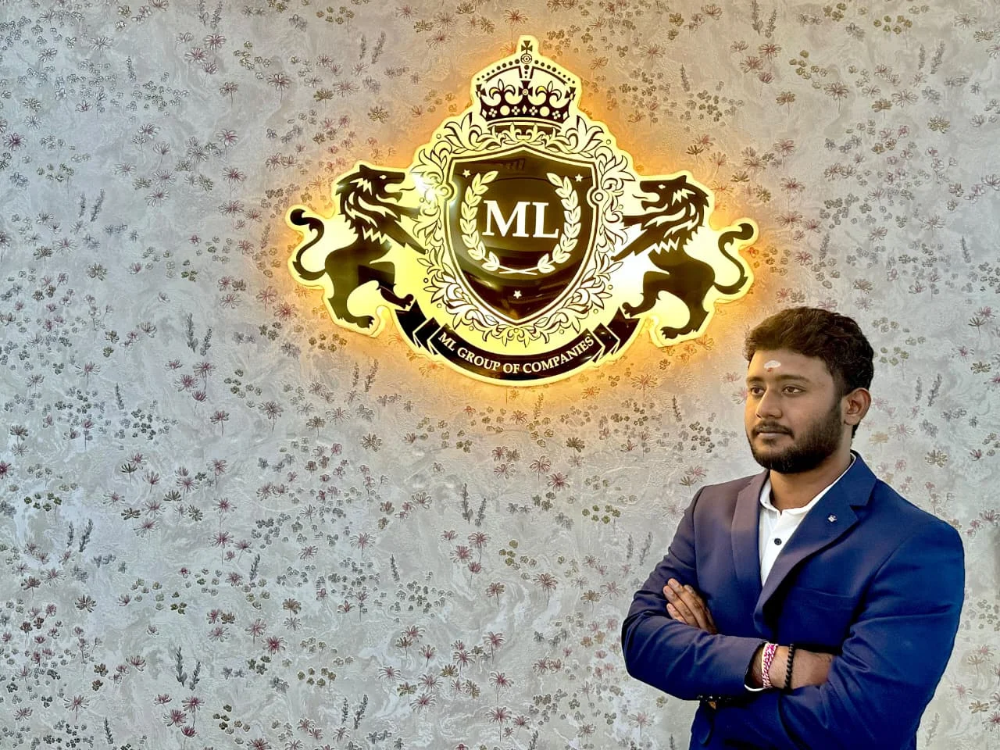
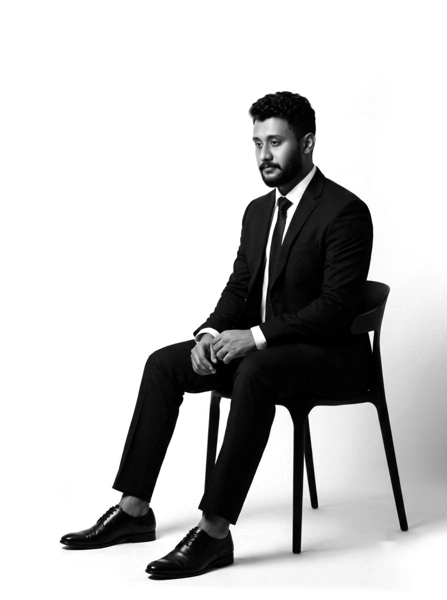

Bollam
Rishithej
Founder, Managing Director, and Venture Architect orchestrating multi-sector deep technology, autonomous artificial intelligence, and sovereign industrial asset platforms.
“Build the best startup ecosystem in India and build for the world from India.”
Core Institutional DoctrineStrategic Doctrine & Leadership
Bollam Rishithej is an Indian founder and operator based in Hyderabad, Telangana. He holds a Master of Science in Entrepreneurship and Innovation Management from the University of Leicester (United Kingdom), where the work went on a business model for converting plastic waste into fuel. It never reached commercial deployment. That is the lesson he draws on most often: a good idea and a working business are separated by an enormous amount of unglamorous work, and almost everybody stops inside that gap.
He is Founder and Managing Director of ML Dynamic Solutions and holds board positions across twelve companies under the Companies Act, 2013 — spanning agentic AI security, computer vision, electrochemical sensing, healthcare revenue intelligence, capital management, bullion, infrastructure and food processing — and is Co-Founder and Chief Technology Officer of Emergera.ai in the United States. The breadth is structural rather than opportunistic. The engineering ventures are funded from the cash flow of operating businesses that already trade, which means a research timeline is set by the engineering rather than by someone else's fundraising calendar.
Several portfolio entities are recognised under the Government of India's DPIIT framework. Each of them enters its sector the same way: find one partner willing to run the system in live operation, build against that partner's actual constraints, deploy it where failure would be embarrassing, and only then call it a product. In education that partner is Deccan Springs Global School, Hyderabad, where the pilot is deployed under a signed memorandum of understanding.
One partner first
A sector is entered through a single committed pilot, built against its real constraints, and generalised only once the system has survived live operation. The second deployment is expected to break in ways the first did not.
Collaboration over capture
A category in an unorganised sector is built by several serious companies at once or it is not built at all. Laboratories, academic institutions and delivery partners are treated as collaborators whose own success has to be genuine.
Five photographs — swipe or scroll sideways.
Executive Credentials
Engineering work is funded from the cash flow of the operating commodity and industrial businesses rather than from external rounds, so a research timeline is set by the engineering rather than by a fundraise.
Positions throughout this monograph are stated under the Companies Act, 2013. The whole-time key managerial personnel office is held solely at ML Dynamic Solutions, in accordance with Section 203(1); all other entities are held in a board or promoter capacity. Aggregate directorships remain within the Section 165 ceiling.
The year in England
MSc Entrepreneurship and Innovation Management, University of Leicester. The dissertation was a business model for converting plastic waste into fuel; it never reached commercial deployment, and the lesson from that is in the profile opposite.
Democratizing precision analytical chemistry by miniaturizing room-sized, capital-intensive laboratory spectrometers into handheld, field-deployable continuous electrochemical sensing platforms.
Vidyuthlabs Technologies addresses the fundamental bottleneck of modern physical diagnostics: the immense latency, exorbitant cost, and sample transportation overhead inherent in central laboratory testing. By developing proprietary micro-electrode arrays combined with edge analog front-ends (AFEs), Vidyuthlabs enables laboratory-grade voltammetry and potentiometric analysis directly at the point of need.
Precision Agritech Telemetry
Real-time continuous measurement of soil Nitrogen, Phosphorus, Potassium (N-P-K), micronutrient flux, and pH directly in agricultural fields, reducing synthetic fertilizer wastage by up to 38%.
Industrial Effluent Monitoring
Sub-ppb (parts-per-billion) detection of heavy metal contaminants (Lead, Arsenic, Cadmium, Mercury) in municipal waterways and factory discharge pipelines with zero reagents required.
Energy & Battery Analytics
Electrochemical Impedance Spectroscopy (EIS) algorithms embedded directly into energy storage modules to detect lithium dendrite growth and electrolyte degradation prior to thermal runaway.
Point-of-Care Diagnostics
Disposable micro-fluidic electrochemical test strips interfacing with a universal digital reader, delivering instant biomarker quantification for clinical health screenings in remote clinics.
Venture Specifications
Proprietary high-impedance low-noise analog signal processing chips coupled with machine learning de-noising models that eliminate environmental temperature and ionic drift in unshielded field conditions.
Converting millions of passive surveillance cameras into real-time cognitive spatial intelligence engines—delivering autonomous safety, incident prevention, and operational automation at the edge.
Worldwide, over 1.2 billion video cameras record continuous streams of visual data; yet, 99.8% of this footage remains uninspected until after industrial disasters, security compromises, or costly logistical bottlenecks occur. Predictera transforms this passive surveillance paradigm by deploying sovereign edge-optimized computer vision neural networks that parse video frames into structured telemetry in real-time.
Industrial EHS & Worker Safety
Autonomous verification of Personal Protective Equipment (PPE), heavy machinery exclusion boundary enforcement, man-down detection, and rapid thermal flame/vapor plume identification in harsh factory environments.
Critical Infrastructure Protection
Sub-second perimeter intrusion classification, automated PTZ tracking, unauthorized drone surveillance detection, and suspicious loitering telemetry for transit corridors and high-security defense zones.
Logistics & Dock Telemetry
Automated optical character recognition (OCR) for intermodal shipping containers, trailer turnaround optimization, volumetric cargo capacity assessment, and automated gate clearance without human intervention.
Smart City Grid Management
Urban intersection vehicle density analytics, emergency vehicle right-of-way preemption, traffic violation auditing, and pedestrian crowd surge telemetry operating on low-bandwidth decentralized nodes.
Venture Specifications
Engineered for austere, bandwidth-constrained industrial environments across India and emerging markets, functioning at full analytical capacity completely decoupled from public internet connectivity.
Neutralizing cyber adversary velocity by replacing overwhelmed human security operation centers with autonomous, cooperating AI agents that triage, investigate, and isolate threats in milliseconds.
Modern enterprise cyber warfare is fought at machine speed: automated malware and state-sponsored intrusion vectors execute lateral movement across corporate networks in seconds. Conversely, traditional human-staffed Security Operations Centers (SOCs) suffer from debilitating alert fatigue, averaging 45 minutes to triage an alert and up to 21 days to contain a breach. FirstSecure.ai eliminates this asymmetric vulnerability through agentic artificial intelligence.
Autonomous Alert Investigation
Multi-agent consensus models ingest tens of thousands of SIEM/EDR alarms per second, correlating disparate signals, querying identity graphs, and dismissing 99.2% of benign false alarms without analyst involvement.
Microsecond Active Containment
Upon verifying malicious execution, FirstSecure dispatches automated API commands to quarantine endpoints, sever compromised session tokens, and deploy surgical eBPF packet-drops to prevent lateral spread.
Automated Kill-Chain Mapping
Reconstructs attacker ingress, privilege escalation pathways, and data staging actions in real-time, mapping every step directly against the MITRE ATT&CK enterprise matrix with forensic certainty.
Adversarial Deception Grids
Dynamically spawns lightweight, hyper-realistic synthetic decoys and honeytokens across cloud infrastructure to trap zero-day exploit campaigns and harvest attacker telemetry.
Venture Specifications
Designed as a self-healing cyber immunological system that neutralizes hostile reconnaissance and credential abuse before human administrators are even alerted.
Restoring liquidity to hospital networks by deploying clinical natural language models to automatically predict, prevent, and successfully appeal medical insurance claim denials.
In the global healthcare economy, commercial payers leverage automated algorithms to systematically reject more than $300 billion in legitimate hospital insurance claims annually. Facing complex bureaucratic appeals processes, healthcare providers write off billions in earned revenue simply because they lack the administrative bandwidth to manually contest each denial. DenyFix.ai automates the entire appeal lifecycle through deep clinical and regulatory artificial intelligence.
Pre-Submission Predictive Scrubbing
Analyzes diagnostic ICD-10 and CPT coding combinations alongside payer-specific policy guidelines prior to transmission, flagging claims likely to trigger denial with 96.8% predictive accuracy.
Clinical Evidence Chart Extraction
Proprietary LLMs extract supporting clinical evidence, operative notes, and laboratory findings from unstructured EHR records, assembling an irrefutable evidentiary packet for medical necessity.
Algorithmic Legal Appeal Synthesis
Automatically generates customized, legally cited appeal briefs directly addressing payer denial codes, citing statutory appeal deadlines and relevant Medicare/Medicaid regulatory precedents.
Payer Adjudication Telemetry
Aggregates behavioral adjudication data across insurance conglomerates, uncovering silent policy changes, downcoding patterns, and unannounced automated denial algorithms in real time.
Venture Specifications
Recovers 8.4% to 14.1% of previously abandoned hospital net patient service revenue (NPSR), converting write-offs directly into balance-sheet cash reserves.
The foundational engineering powerhouse and strategic balance-sheet capital allocator—architecting mission-critical digital systems and deploying catalytic venture backing to frontier tech founders.
ML Group of Companies, anchored by ML Dynamic (a DPIIT-recognized enterprise technology firm) and ML Capital, constitutes the central strategic pillar of Bollam Rishithej's ecosystem. ML Dynamic delivers high-throughput enterprise architectures, distributed database backbones, and bespoke algorithmic software to large corporate entities, ensuring unmatched operational reliability.
Concurrently, ML Capital functions as an agile private compounding vehicle, allocating proprietary balance-sheet capital into early-stage deep-tech, semiconductor, robotics, and cyber defense ventures that possess defensible technological moats.
ML Dynamic Enterprise Architecture
Designing high-concurrency transactional backbones, sovereign data lakes, and customized microservice workflows for enterprises scaling past multi-billion rupee transaction thresholds.
ML Capital Venture Investments
Deploying direct seed and pre-series A capital into technical founders engineering asymmetric hardware, sensing, or AI solutions with zero reliance on speculative market sentiment.

Venture Specifications
Every software framework engineered under ML Group is built with strict cryptographic integrity, zero telemetry backdoors, and full data residency within sovereign Indian infrastructure.
Convening global executive leadership, sovereign capital allocators, and pioneering founders to accelerate institutional technology adoption, cross-border M&A, and high-stakes board governance.
In an era defined by disruptive artificial intelligence and geopolitical realignment, the demands placed upon the modern C-suite have outpaced traditional advisory models. CXOera operates as an elite, invite-only leadership consortium and advisory platform engineered specifically for Chief Executive Officers, Board Directors, and Institutional Managing Partners.
Executive Syndicate Roundtables
Chatham House rule forums where Fortune 500 executives and top venture leaders address sovereign AI integration, enterprise defense posture, and regulatory compliance.
Institutional Board Placement
Advising high-growth tech ventures on composing world-class independent boards that bring domain mastery, governance credibility, and institutional investor access.
Fractional Strategic Leadership
Deploying veteran enterprise executives on an interim or fractional basis to navigate complex acquisitions, international corporate restructuring, or IPO readiness.
Cross-Border Venture Syndication
Connecting verified Indian deep-tech innovations with family offices and sovereign wealth institutions across the United Kingdom, Europe, and the Middle East.
Venture Specifications
Empowering the next generation of industrial and technology leaders with battle-tested governance frameworks to safeguard shareholder equity during exponential scale.
Industrial Heritage & Ground Operations
The unyielding economic bedrock: self-sustaining commodity trading, infrastructure logistics, precious metals bullion, and consumer staples driving multi-generational balance sheet strength.
| Commercial Entity | Industrial Sector | Core Operational Focus | Strategic Function |
|---|---|---|---|
|
|
Precious Metals & Bullion | Physical gold and silver bullion spot trading, high-security treasury vaulting, and wholesale commercial liquidity. | Treasury Preservation |
|
|
Civil Infrastructure & EPC | Heavy industrial contracting, commercial logistics hubs, earthworks, and strategic land development projects. | Physical Assets |
|
|
Commodity Supply Chain | Wholesale agricultural trading, inter-state bulk grain logistics, and warehouse inventory arbitrage. | Cash Flow Engine |
|
|
Consumer Food Processing | High-throughput staple milling, quality packaged foods, and regional consumer retail distribution channels. | Consumer Moat |
Capital Compounding Engine
Cash flows generated from essential real-world industries are systematically re-invested into deep-tech venture R&D—creating an unassailable financial flywheel immune to macroeconomic venture cycles.
Physical Supply Chain Mastery
Hands-on operational control of commodities, warehousing, and logistics provides immediate, real-world testing grounds for edge AI and autonomous sensing hardware before public commercialization.

Office of Bollam Rishithej
Engage with the executive office for institutional strategic partnerships, venture co-investment syndicates, and sovereign technology deployment.
Whether evaluating multi-camera edge vision implementations through Predictera, deploying autonomous cyber defense grids via FirstSecure.ai, commercializing field electrochemical instrumentation with Vidyuthlabs, or co-investing alongside ML Capital, the executive office operates on rapid, decisive timelines.
Corporate & Enterprise Inquiries
rishi@mldynamic.com
Direct executive communications, technology integration, and enterprise licensing contracts.
Cybersecurity & SOC Architecture
rishithej@firstsecure.ai
Confidential vulnerability disclosures, autonomous SOC audits, and defense deployments.
Professional Executive Registry
linkedin.com/in/rishithej-bollam ↗
Verified executive identity, board inquiries, and syndicate relationships.
Global Headquarters
Hyderabad, Telangana, India
Operational hubs across Hyderabad, Bengaluru, with international affiliations in the United Kingdom.
Institutional Registry
This executive monograph is prepared for sovereign investors, institutional syndicate partners, and enterprise leadership. All rights, patents, and trademarks remain under protected international treaties.